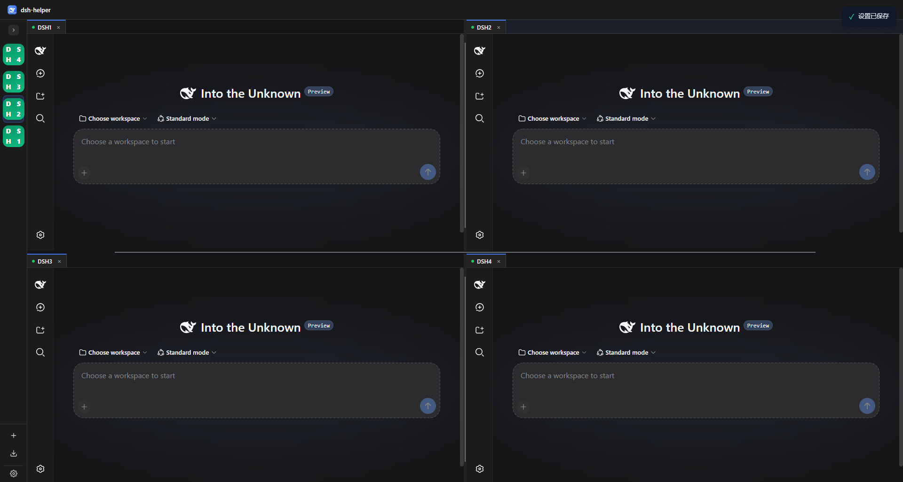
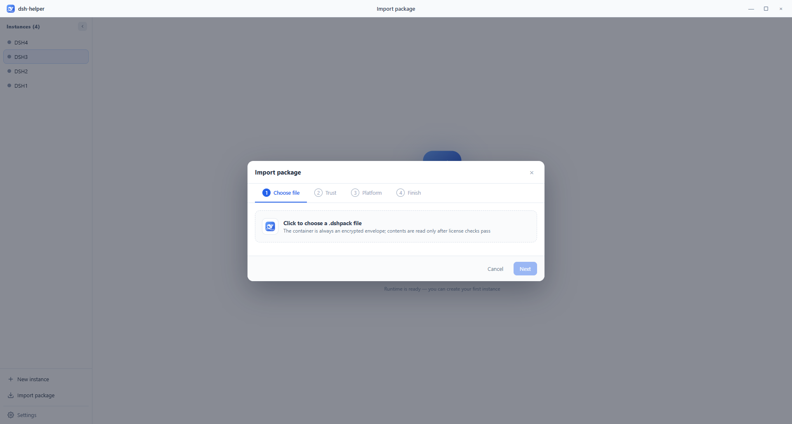
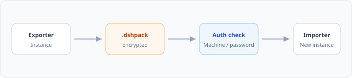
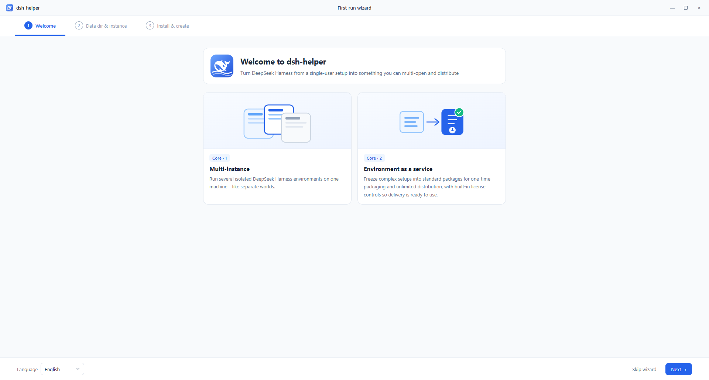

Quad-pane layout
Open several dsh environments side by side. Drag tabs to split into a 2×2 grid — each pane keeps its own process, port, and data.
 DeepSeek Harness · Desktop companion
DeepSeek Harness · Desktop companion
DSHHelper runs multiple isolated DeepSeek Harness workspaces on one
machine — built-in runtime, quad-pane layout, and shareable
.dshpack packages.

The model is the soul of an agent. A harness lets it understand its environment and keep working in real settings. DSHHelper adds the desktop layer — several isolated harness processes in one window.
Desktop = Instances + Runtime
Capabilities
Multi-instance isolation, a cached Node + dsh runtime, and portable packages — the three pieces you need to run harnesses locally, without juggling terminals.
Open several dsh environments side by side. Drag tabs to split into a 2×2 grid — each pane keeps its own process, port, and data.
The first-run wizard downloads what you need into your data folder. Later starts skip the wait — runtime stays ready on disk.
Ship presets, patches, and settings as one file. Import through the sidebar with optional machine-bound or password protection.
Design approach
Open instances from the sidebar, then drag tabs to window edges to split. Light and dark shell themes affect the helper UI only — not the pages inside each harness.

A .dshpack packages what teammates or clients need to
recreate an environment — export from instance details, import from
the sidebar wizard.

Packages
The full flow from a configured instance to a workspace your team can open on day one.


Get started
Installers ship on GitHub Releases for Windows, macOS, and Linux.
github.com/x102201/deepseek-harness-helper/releases
Built for DeepSeek Harness
Documentation and installers live in the public repository. Inside each tab you still get the DeepSeek Harness experience — DSHHelper keeps the instances running together.